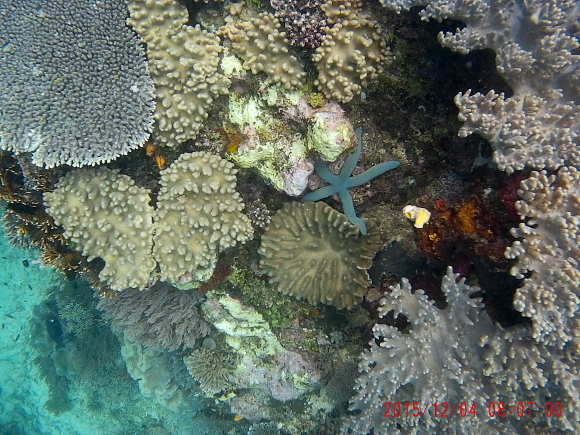

-------------------------------------------
Like most places in the world, much of the coral has suffered from dynamite fishing; floating garbage and in particular plastic bags; overfishing; and warming of the oceans. This particular reef was very narrow, much of it under an overhang from the steep cliff face on the west side of Friwinbonda. Consequence: Sheltered from the sun half the day; not enough territory/too dangerous for the fisherman to use dynamite. End result: Pristine coral.
-------------------------------------------
| Two members of a small school of mega-fish -- bumphead parrotfish, about 3 feet long! South side of Mansoear Island. |  |
| Saw this mega school of fish while snorkling around the docs at Airborei Island after lunch. A total wall of fish, so thick one could not see the coral. I swam right into the middle of the school, making them a little uncomfortable. They cleared out a small area around me, but soon totally surrounded me. | |
| I describe this as pink sponge coral. I'd be happy to properly label if someone would like to identify it. The yellow item is a heart ascidian. |  |
| Beautiful display of soft corals. |  |
| Blue starfish and heart ascidian (yellow) amongst other jewels. |  |
| Wonderfully diverse reef with no damage, a real treat. Note: All photos taken with SJ Cam in underwater housing using natural lighting, while snorkeling. |  |
Questions: Did you turn off the TV? Take a walk with friends? Go to a dance? Then have a fabulous day!

Special Topics:
| |||||